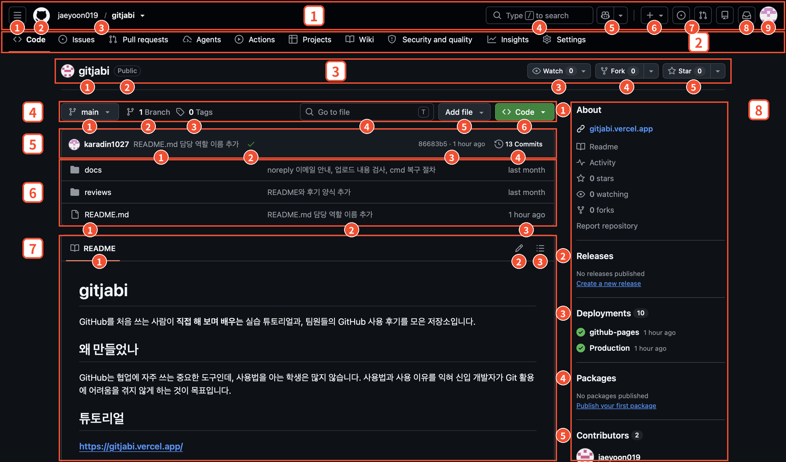
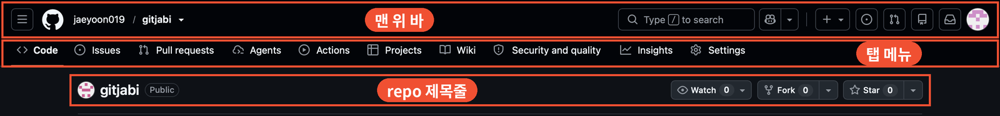
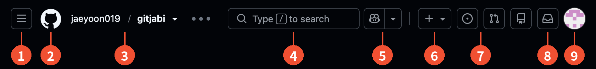
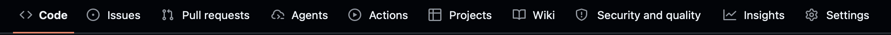
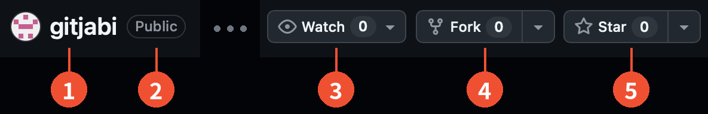
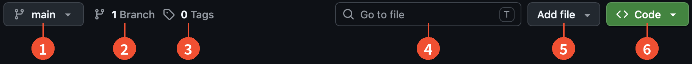
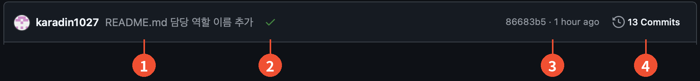
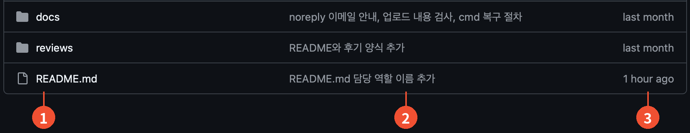
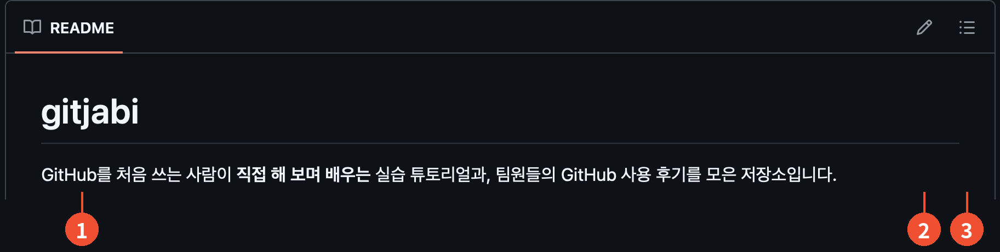

02 · GitHub 화면
GitHub 화면 살펴보기
저장소(repo) 페이지를 열면 가장 먼저 보이는 화면을 위에서부터 하나씩 알아봅니다.
화면 전체 보기
아래에서 설명할 부분을 한 화면에 모두 표시했습니다. 설명을 읽다가 어디를 말하는지 헷갈리면 이 그림으로 돌아와 보세요.

- 1맨 위 바
- 2탭 메뉴
- 3repo 제목줄
- 4branch · 검색 · Code 버튼 줄
- 5가장 최근 commit
- 6파일 목록
- 7README
- 8오른쪽 정보 영역
위쪽은 세 줄로 나뉩니다
repo 페이지의 위쪽은 크게 세 부분입니다.

- 맨 위 바: 어느 화면에서나 보이는 공통 메뉴입니다. 검색, 새로 만들기, 알림, 프로필이 여기 있습니다.
- 탭 메뉴: 이 repo에서 할 수 있는 기능을 종류별로 모아 둔 줄입니다.
- repo 제목줄: 이 repo의 이름과 공개 여부, Watch · Fork · Star 버튼이 있습니다.
그 아래로는 Code 탭의 본문(branch와 파일 검색 줄, 최근 commit, 파일 목록, README, 오른쪽 정보 영역)이 이어지고, 이것도 아래에서 차례로 설명합니다.
화면이 조금 다르게 보여도 괜찮아요
스크린샷은 어두운 화면(다크 모드)이고, 밝은 화면에서도 구성은 같습니다. GitHub는 화면을 자주 바꾸기 때문에 메뉴 이름이나 위치가 조금 다를 수 있습니다.
1. 맨 위 바
어느 repo를 열어도, 어느 화면으로 넘어가도 맨 위에 계속 보이는 줄입니다. 번호 순서대로 왼쪽부터 설명합니다.

-
1
메뉴 버튼눌러서 열리는 메뉴로 GitHub의 주요 화면으로 이동할 수 있습니다.
-
2
GitHub 로고누르면 GitHub 첫 화면(홈)으로 돌아갑니다. 로그인하면 처음 보이는 화면이 이곳입니다.
-
3
소유자 / repo 이름지금 보고 있는 repo가 누구의 어떤 repo인지 알려 줍니다. 이 repo는
jaeyoon019가 소유한gitjabi입니다. -
4
검색창repo, 코드, 사람을 찾습니다. 키보드에서
/키를 누르면 바로 검색창으로 이동합니다. -
5
CopilotGitHub의 AI 코딩 도우미를 여는 버튼입니다. 처음에는 몰라도 됩니다.
-
6
+ 버튼새 repo 같은 것을 만들 때 씁니다. 새 repo를 만들려면 여기서
New repository를 고릅니다. -
7
Issues · Pull requests 아이콘내가 만들었거나 나에게 배정된 이슈와 Pull Request를 한 번에 모아 보는 바로가기입니다. 여러 repo에 참여할수록 편해집니다.
-
8
알림나에게 온 알림을 모아 봅니다. 리뷰 요청, 나를 언급한 댓글 같은 것이 여기에 쌓입니다.
-
9
프로필 사진누르면 내 프로필, 내 repo 목록, 설정, 로그아웃 메뉴가 열립니다.
2. 탭 메뉴
이 repo에서 할 수 있는 기능이 탭으로 나뉘어 있습니다. 지금 보고 있는 탭에는 주황색 밑줄이 표시되고, 스크린샷에서는 Code 탭이 선택된 상태입니다.

| 탭 | 하는 일 |
|---|---|
| Code 자주 씀 | 파일과 폴더를 보는 기본 화면입니다. repo를 열면 처음 보이는 곳입니다. |
| Issues 자주 씀 | 할 일, 버그, 아이디어를 글로 등록하고 담당자를 정하는 게시판입니다. 팀 프로젝트에서 역할을 나눌 때 씁니다. |
| Pull requests 자주 씀 | "내 변경을 합쳐 주세요"라는 요청이 모이는 곳입니다. 요청을 확인하고 의견을 남기고, 합치는 일까지 여기서 합니다. |
| Agents | AI(Copilot 코딩 에이전트)에게 작업을 맡기고 진행 상황을 확인하는 곳입니다. 처음에는 몰라도 됩니다. |
| Actions | 코드를 올릴 때 테스트나 빌드 같은 작업을 자동으로 실행해 주는 기능입니다. 실행 기록도 여기서 봅니다. |
| Projects | 할 일을 "할 일 / 진행 중 / 완료" 같은 보드로 관리하는 기능입니다. |
| Wiki | 설명 문서를 따로 정리해 두는 공간입니다. |
| Security and quality | 보안 경고와 코드 품질 점검 결과를 모아 보는 곳입니다. 예전에는 Security라는 이름이었습니다. |
| Insights | 누가 얼마나 작업했는지, commit이 언제 쌓였는지 같은 활동 통계를 그래프로 보여 줍니다. |
| Settings | repo 이름, 공개 여부, 팀원 초대(Collaborators) 같은 관리 설정입니다. 관리 권한이 있는 사람에게만 보입니다. |
처음에는 세 개만
팀 프로젝트에서는 Code, Issues, Pull requests 세 탭을 가장 자주 씁니다. 나머지는 필요해질 때 하나씩 열어 보면 됩니다.
3. repo 제목줄
탭 메뉴 바로 아래, 이 repo가 어떤 repo인지 알려 주는 줄입니다.

-
1
repo 이름이 repo의 이름입니다. 앞의 동그란 그림은 소유자의 프로필 이미지입니다.
-
2
Public 표시누구나 볼 수 있는 공개 repo라는 뜻입니다. 비공개(Private)라면 초대받은 사람만 볼 수 있습니다.
-
3
Watch이 repo에 생기는 활동을 알림으로 받을지 정합니다. 옆의 숫자는 지켜보는 사람 수이고, 화살표로 알림 범위를 고를 수 있습니다.
-
4
Fork이 repo를 통째로 내 계정으로 복사해 가는 기능입니다. 오픈소스에 기여할 때 주로 쓰고, 팀 프로젝트에서는 거의 쓰지 않습니다. 숫자는 복사해 간 횟수입니다.
-
5
Star마음에 드는 repo에 별을 달아 두는 북마크 겸 "좋아요"입니다. 숫자는 별을 누른 사람 수입니다.
숫자가 0이어도 이상한 게 아니에요
Watch, Fork, Star 옆의 숫자는 그 버튼을 누른 사람 수입니다. 새로 만든 repo는 모두 0에서 시작합니다.
4. branch · 파일 검색 · Code 버튼 줄
여기서부터는 Code 탭을 열었을 때 보이는 본문입니다. 먼저 파일 목록 바로 위에 있는 한 줄입니다.

-
1
branch 선택 (main ▾)지금 보고 있는 branch(작업 갈래)의 이름입니다. 처음에는
main하나뿐이고, 눌러서 다른 branch로 바꾸면 아래 파일 목록도 그 branch 기준으로 바뀝니다. -
2
1 Branch이 repo에 있는 branch의 개수입니다. 누르면 목록을 볼 수 있습니다.
-
3
0 Tagstag는 "v1.0"처럼 특정 시점의 commit에 붙이는 이름표(버전 표시)입니다. 쓰지 않으면 0이고, 처음에는 몰라도 됩니다.
-
4
Go to file파일 이름으로 repo 안의 파일을 바로 찾습니다. 오른쪽의
T는 단축키라서, 키보드에서T를 누르면 바로 열립니다. -
5
Add file웹에서 바로 새 파일을 만들거나(Create new file), 내 컴퓨터의 파일을 올릴 수 있습니다(Upload files).
-
6
Code (초록 버튼)누르면 이 repo를 내 컴퓨터로 내려받을 때 쓰는 주소(clone 주소)를 복사하거나, ZIP 파일로 받을 수 있는 메뉴가 열립니다.
5. 가장 최근 commit
파일 목록 바로 위에는 이 branch에 마지막으로 반영된 commit의 정보가 한 줄로 나옵니다.

-
1
작성자와 commit 메시지가장 최근 commit을 만든 사람과 그 commit에 적은 메시지입니다. 앞의 동그란 그림은 작성자의 프로필 이미지입니다.
-
2
상태 아이콘그 commit에 대한 자동 확인(배포 등)의 결과입니다. 초록 체크는 성공, 노란 점은 진행 중, 빨간 X는 실패를 뜻합니다.
-
3
번호와 시간
86683b5는 commit마다 붙는 고유 번호(해시)의 앞부분이고,1 hour ago는 올라온 시점입니다. 번호를 누르면 그 commit에서 무엇이 바뀌었는지 볼 수 있습니다. -
4
13 Commits지금까지 쌓인 commit의 개수입니다. 누르면 누가 언제 무엇을 바꿨는지 전체 이력이 시간순으로 나옵니다.
6. 파일 목록
이 repo에 들어 있는 폴더와 파일입니다. 폴더가 위에, 파일이 아래에 모여 있습니다.

-
1
폴더·파일 이름폴더 아이콘은 폴더, 문서 아이콘은 파일입니다. 이름을 누르면 폴더 안으로 들어가거나 파일 내용을 볼 수 있습니다.
-
2
마지막 commit 메시지그 폴더나 파일을 마지막으로 바꾼 commit의 메시지입니다. 어디가 최근에 바뀌었는지 한눈에 보입니다.
-
3
시간그 commit이 올라온 시점입니다.
last month,1 hour ago처럼 지금을 기준으로 표시됩니다.
7. README
파일 목록 바로 아래에는 README.md 파일의 내용이 보기 좋게 표시됩니다.
repo를 열면 가장 먼저 읽게 되는 소개글이라서, 프로젝트가 무엇인지와 사용법을 적어 둡니다.
확장자 .md는 #, - 같은 간단한 표시로 제목과 목록을 만드는 Markdown 문서라는 뜻입니다.

-
1
README 제목줄아래에 보이는 내용이 README.md 파일이라는 표시입니다. 이 repo에서는 프로젝트를 소개하고 튜토리얼 주소를 안내하고 있습니다.
-
2
연필 아이콘README를 웹에서 바로 수정할 수 있는 버튼입니다.
-
3
목차 아이콘README의 제목들을 목차로 펼쳐 줍니다. 글이 길 때 원하는 부분으로 바로 이동할 수 있습니다.